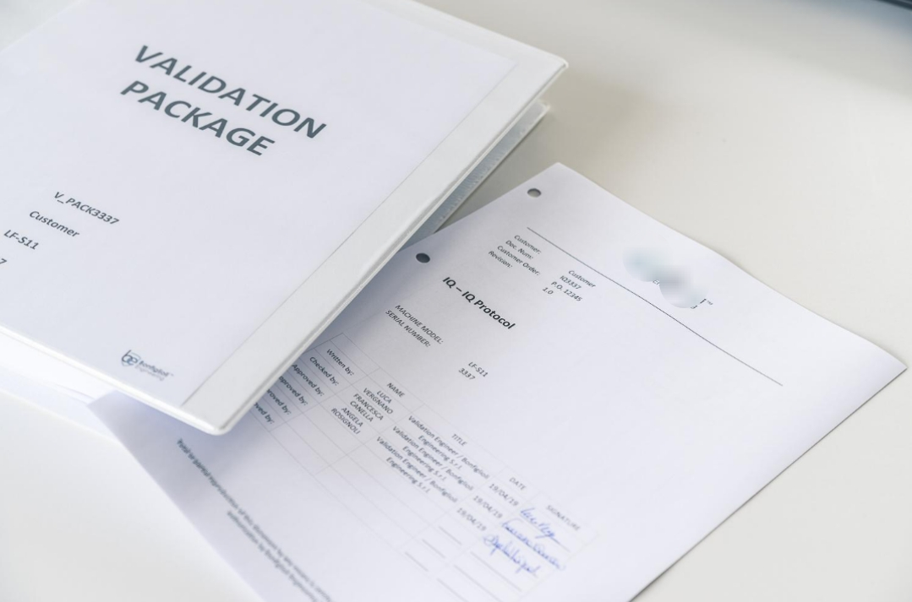
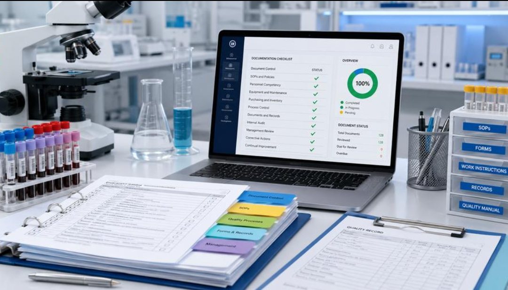

CHECKLISTS & TEMPLATES
Practical tools for structured quality work.
Explore practical checklists, templates and regulatory learning resources designed to help teams organise work and ask better questions.


Professionally structured checklists, worksheets and reference guides designed to help pharmaceutical teams review systems, identify gaps and prepare stronger quality evidence.
A structured pre-qualification review covering scope, intended use, criticality, prerequisites, calibration status, supporting documents, traceability and execution readiness.
Review prompts for document control, legibility, completeness, contemporaneous recording, traceability, corrections, approvals and controlled-document lifecycle expectations.
A structured working sheet for documenting hazards, causes, potential impact, existing controls, risk evaluation, mitigation actions, ownership and residual-risk review.
A practical learning guide covering contamination-control thinking, facility and process controls, cleanroom behaviour, environmental monitoring and sterile-manufacturing readiness.
Review prompts for protocol scope, prerequisites, acceptance criteria, test methodology, data references, deviations, traceability, approvals and reportability.
A structured evidence register for document ownership, retrieval path, status, responsible SME, inspection relevance, action tracking and readiness verification.
These resources are educational and professional working aids, not regulatory advice or approved controlled templates. They should be adapted to the applicable product, process, facility, quality system and regulatory requirements, then verified and approved through the user's own quality-management system before use.
Questions about ValiStera checklists, guides or downloadable tools? Our team can help.
Work is scoped against applicable client procedures, regulatory requirements and guidance. Depending on the engagement, reference frameworks may include GxP, FDA 21 CFR requirements, EU GMP Annexes 1, 11 & 15, ICH Q9(R1), and ISO 9001:2015 quality-management principles.